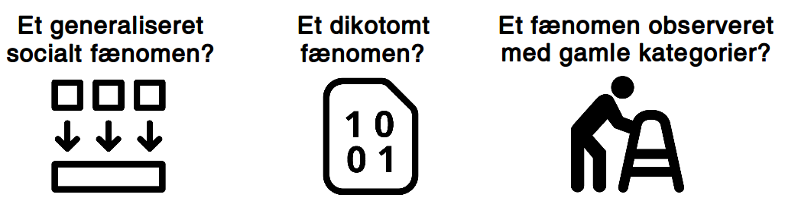

Mellem det latent-politiske og det manifest-politiske
Jakob Sejrup Villadsen
Faldgruber i iagttagelsen af unges politiske udtryk

Et kontinuum over det politiske
Analytiske temaer
Det politiske i forskellige ungdomsfællesskaber